Всем привет! В этой статье я хочу рассказать про базовый пайплайн в прогнозировании временных рядов с помощью нейронных сетей, в данном случае, наверное, с самыми сложными временными рядами для анализа — финансовыми данными, которые имеют случайную природу, и, казалось бы, непредсказуемые. Или все-таки нет?
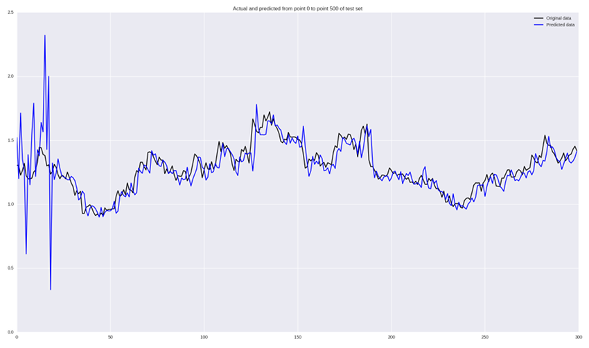
Я сейчас учусь на последнем курсе магистратуры в University of Verona по специальности "прикладная математика", и как типичный студент-айтишник из СНГ, работать начал еще на бакалаврате в Киевском Политехническом Институте, применяя тогда еще только набиравшее обороты машинное обучение в разных проектах, чем занимаюсь и сейчас. В университете тема моих исследований — deep learning применительно к временным рядам, в частности — финансовым.
Цель этой статьи — показать процесс работы с временными рядами от обработки данных до постройки нейронных сетей и валидации результатов. В качестве примера финансовые ряды были выбраны как абсолютно случайные и вообще интересно, могут ли обычные архитектуры нейронных сетей уловить нужные паттерны для предсказания поведения финансового инструмента.
Пайплайн, описанный в этой статье, легко применяется к любым другим данным и к другим алгоритмам классификации. Для тех, кто хочет сразу запустить код — можете скачать IPython Notebook.
Для примера возьмем цены акций такой скромной компании как Apple с 2005 по сегодняшний день. Их можно скачать на Yahoo Finance в формате .csv. Давайте загрузим данные и посмотрим как вся эта красота выглядит.
Для начала заимпортим нужные нам для загрузки библиотеки:
import matplotlib.pylab as plt
import numpy as np
import pandas as pd
Прочитаем данные и нарисуем графики (в .csv из Yahoo Finance данные загружены в обратном порядке — от 2017 до 2005, так что сначала надо их “перевернуть” с помощью [::-1]):
data = pd.read_csv('./data/AAPL.csv')[::-1]
close_price = data.ix[:, 'Adj Close'].tolist()
plt.plot(close_price)
plt.show()
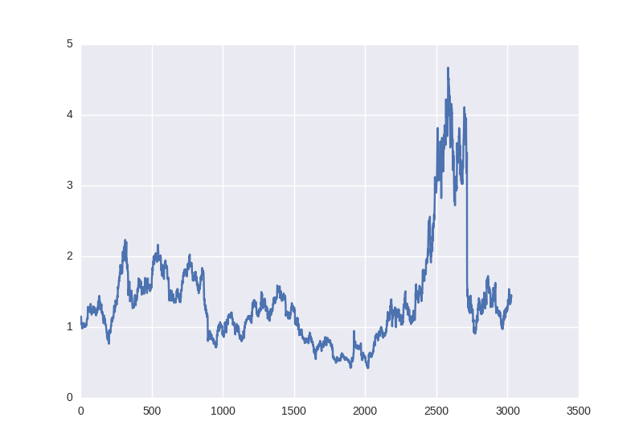
Выглядит почти как типичный случайный процесс, но мы попробуем решить задачу прогнозирования на день или несколько вперед. Задачу “прогнозирования” сначала надо описать ближе к задачам машинного обучения. Мы можем предсказывать просто движение цены акций на рынке — больше или меньше — это будет задача бинарной классификации. С другой стороны, мы можем предсказывать или же просто значения цены в следующий день (или через пару дней) или изменение цены в следующий день по сравнению с последним днем, или же логарифм от этой разницы — то есть мы хотим предсказать число, что является задачей регрессии. Но при решении задачи регрессии придется столкнуться с проблемами нормализации данных, которые мы сейчас рассмотрим.
Что в случае классификации, что в случае регрессии, на вход мы возьмем какое-то окно временного ряда (например, 30 дней) и постараемся или предсказать движение цены в следующий день (классификация), или значение изменения (регрессия).
Основная проблема финансовых временных рядов — они вообще ни капельки не стационарны (можете проверить сами с помощью, скажем, теста Дики-Фуллера), то есть их характеристики, как мат. ожидание, дисперсия, среднее максимальное и минимальное значение в окне меняются со временем, что значит, что по-хорошему мы не можем использовать эти значения для MinMax или z-score нормализации по нашим окнам, так как если в 30 дней в нашем окне у нас одни характеристики, но они могут измениться уже на следующий день или измениться посередине нашего окна.
Но если внимательно посмотреть на задачу классификации, нас не так интересует мат. ожидание или дисперсия в следующий день, нас интересует исключительно движение вверх или вниз. Поэтому мы рискнем, и будем нормализировать наши 30-дневные окна с помощью z-score, но только их, не затрагивая ничего из “будущего”:
X = [(np.array(x) - np.mean(x)) / np.std(x) for x in X]
Для задачи регрессии так уже сделать не получится, ведь если мы будем также вычитать среднее и делить на отклонение, нам придется восстанавливать это значение для значения цены в следующий день, а там уже эти параметры могут быть совершенно другими. Поэтому мы попробуем два варианта: обучить на необработанных данных и попытаемся обмануть систему, взяв процентное изменение цены в следующий день — с этим нам поможет pandas:
close_price_diffs = close.price.pct_change()
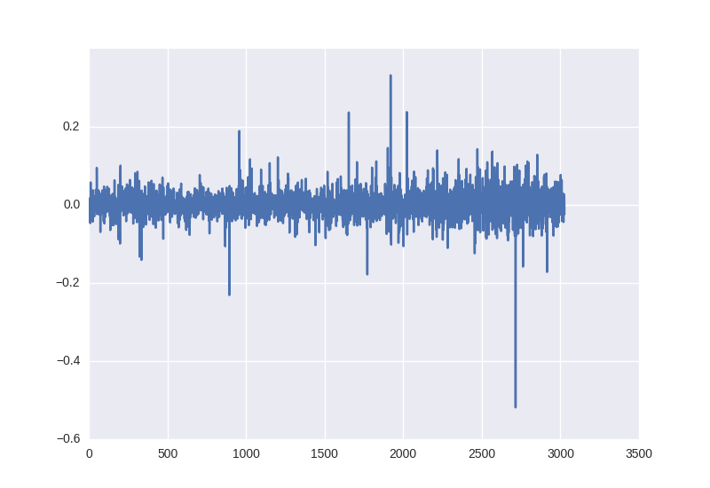
выглядит это так, и как видим — эти данные, полученные без каких-то манипуляций с статистическими характеристиками уже лежат в пределе от -0.5 до 0.5:
Для разделения на обучающую и тренировочную выборку возьмем первые 85% окон во времени для обучения и последние 15% для проверки работы нейронной сети.
Так что для обучения нашей нейронной сети мы получим следующие пары X, Y: цены в момент закрытия рынка за 30 дней и [1, 0] или [0, 1] в зависимости от того, выросло или упало значение цены для бинарной классификации; процентное изменение цен за 30 дней и изменение на следующий день для регрессии.
Как базовую модель будем использовать многослойный перцептрон. Если вы не знакомы с основными понятиями работы нейронных сетей, лучше всего начать отсюда.
В качестве фреймворка для имплементации возьмем Keras — он очень прост, интуитивно понятен и с ним можно реализовывать достаточно сложные вычислительные графы на коленке, но пока что нам это и не понадобится. Реализуем простенькую сетку — входной слой с 30 нейронами (длина нашего окна), первый скрытый слой с 64 нейронами, после него BatchNormalization — его рекомендуется использовать практически для любых многослойных сетей, потом активационная функция (ReLU уже считается не комильфо, поэтому возьмем что-то модное вроде LeakyReLU). На выходе разместим один нейрон (или два для классификации), который в зависимости от задачи (классификация или регрессия) будет или иметь softmax на выходе, или оставим его без нелинейности, чтобы иметь возможность прогнозировать любое значение.
Код для классификации выглядит так:
model = Sequential()
model.add(Dense(64, input_dim=30))
model.add(BatchNormalization())
model.add(LeakyReLU())
model.add(Dense(2))
model.add(Activation('softmax'))
Для задачи регрессии в конце параметр активации должен быть ‘linear’. Далее нам нужно определить функции ошибки и алгоритм оптимизации. Не вдаваясь в детали вариаций градиентного спуска возьмем Adam с длиной шага 0.001; параметр loss для классификации нужно поставить кросс-энтропию — ‘categorical_crossentropy’, а для регрессии — среднюю квадратическую ошибку — ‘mse’. Также Keras позволяет нам достаточно гибко контролировать процесс обучения, например, хорошая практика — это уменьшать значение шага градиентного спуска, если наши результаты не улучшаются — именно этим и занимается ReduceLROnPlateau, который мы добавили как коллбэк в обучение модели.
reduce_lr = ReduceLROnPlateau(monitor='val_loss', factor=0.9, patience=5, min_lr=0.000001, verbose=1)
model.compile(optimizer=opt,
loss='categorical_crossentropy',
metrics=['accuracy'])
Обучение нейронной сети
history = model.fit(X_train, Y_train,
nb_epoch = 50,
batch_size = 128,
verbose=1,
validation_data=(X_test, Y_test),
shuffle=True,
callbacks=[reduce_lr])
После того, как процесс обучения завершен, будет неплохо вывести на экран графики динамики значения ошибки и точности:
plt.figure()
plt.plot(history.history['loss'])
plt.plot(history.history['val_loss'])
plt.title('model loss')
plt.ylabel('loss')
plt.xlabel('epoch')
plt.legend(['train', 'test'], loc='best')
plt.show()
plt.figure()
plt.plot(history.history['acc'])
plt.plot(history.history['val_acc'])
plt.title('model accuracy')
plt.ylabel(‘acc’)
plt.xlabel('epoch')
plt.legend(['train', 'test'], loc='best')
plt.show()
Перед запуском обучения хочу обратить внимание на на важный момент: учить алгоритмы на таких данных надо подольше, хотя бы 50-100 эпох. Это связано с тем, что если вы обучите на, скажем, 5-10 эпохах и увидите 55% точности, это скорее всего не будет значить, что вы научились находить паттерны, если вы проведете анализ тренировочных данных, будет видно, что просто 55% окон были для одного паттерна (повышение, например), а остальные 45% — для другого (понижение). В нашем случае 53% окон класса “понижения”, а 47% — “повышения”, поэтому мы будем стараться получить точность выше 53%, которая и будет говорить о том, что мы научились находить признаки.
Слишком высокая точность на сырых данных вроде цены закрытия и простых алгоритмах скорее всего будет говорить о переобучении или “заглядывании” в будущее при подготовке обучающей выборки.
Проведем обучение нашей первой модели и посмотрим на графики:
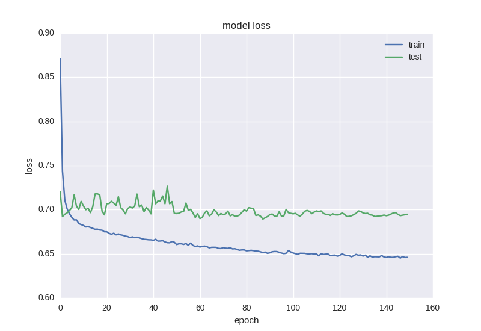
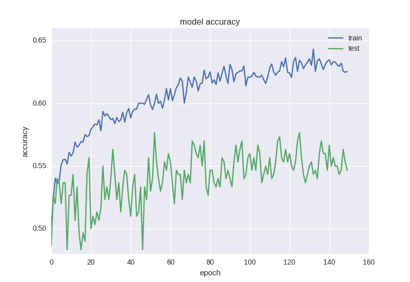
Как видим, что ошибка, что точность для тестовой выборки все время остается на плюс-минус одном значении, а ошибка для тренировочной падает, а точность растет, что говорит нам о переобучении. Давайте попробуем взять более глубокую модель с двумя слоями:
model = Sequential()
model.add(Dense(64, input_dim=30))
model.add(BatchNormalization())
model.add(LeakyReLU())
model.add(Dense(16))
model.add(BatchNormalization())
model.add(LeakyReLU())
model.add(Dense(2))
model.add(Activation('softmax'))
Вот результаты ее работы:
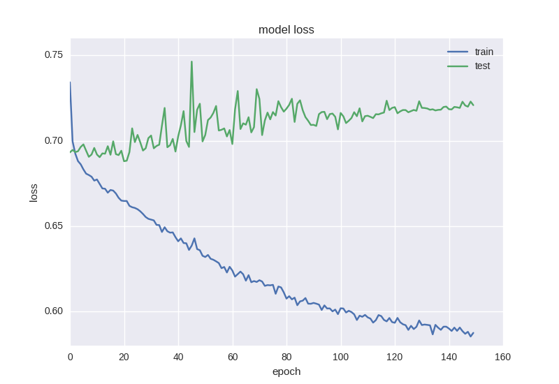
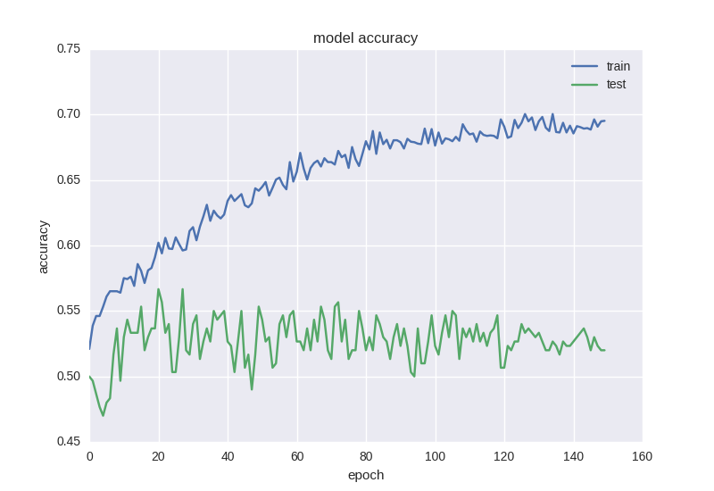
Приблизительно такая же картина. Когда мы сталкиваемся с эффектом переобучения, нам нужно добавить регуляризацию в нашу модель. Если вкратце, то во время переобучения мы строим модель, которая просто “запоминает” наши тренировочные данные и не позволяет обобщить знания на новые данные. В процессе регуляризации мы накладываем определенные ограничения на веса нейронной сети, чтобы не было большого разброса в значениях и не смотря на большое количество параметров (т.е. весов сети), часть из них обратить в ноль для упрощения. Мы начнем с самого распространенного способа — добавления к функции ошибки дополнительного слагаемого с L2 нормой по сумме весов, в Keras это делается с помощью keras.regularizers.activity_regularizer.
model = Sequential()
model.add(Dense(64, input_dim=30,
activity_regularizer=regularizers.l2(0.01)))
model.add(BatchNormalization())
model.add(LeakyReLU())
model.add(Dense(16,
activity_regularizer=regularizers.l2(0.01)))
model.add(BatchNormalization())
model.add(LeakyReLU())
model.add(Dense(2))
model.add(Activation('softmax'))
Такая нейронная сетка учится уже немного лучше с точки зрения функции ошибки, но точность все еще страдает:
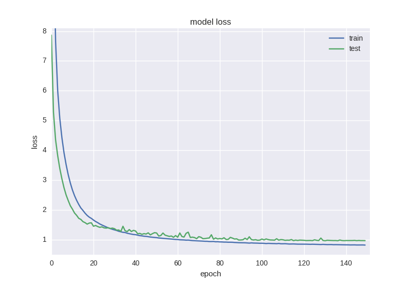
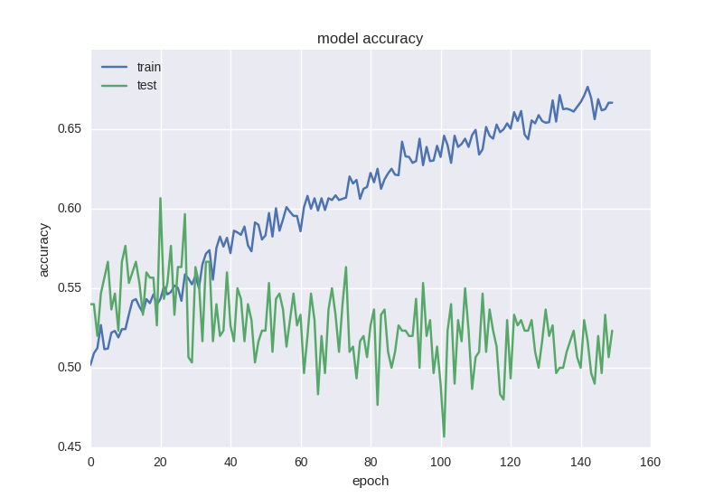
Такой странный эффект как уменьшение ошибки, но не уменьшение точности нередко встречается при работе с данными большой зашумленности или случайной природы — это объясняется тем, что ошибка считается на основе значения cross-entropy, которое может уменьшаться во время того, как точность — это индекс нейрона с правильным ответом, который даже при изменении ошибки может оставаться неправильным.
Поэтому стоит добавить еще больше регуляризации в нашу модель с помощью популярной в последнии года техники Dropout — грубо говоря, это случайное “игнорирование” некоторых весов в процессе обучения, чтобы избежать ко-адаптации нейронов (чтобы они не выучивали одинаковые признаки). Код выглядит следующим образом:
model = Sequential()
model.add(Dense(64, input_dim=30,
activity_regularizer=regularizers.l2(0.01)))
model.add(BatchNormalization())
model.add(LeakyReLU())
model.add(Dropout(0.5))
model.add(Dense(16,
activity_regularizer=regularizers.l2(0.01)))
model.add(BatchNormalization())
model.add(LeakyReLU())
model.add(Dense(2))
model.add(Activation('softmax'))
Как видим, между двумя скрытыми слоями мы будем “дропать” связи во время обучения с вероятностью 50% для каждого веса. Дропаут обычно не добавляют между входным слоем и первым скрытым, так как в этом случае мы будем учить на просто-напросто зашумленных данных, и также не добавляется прямо перед выходом. Во время тестирования сети никакого дропаута, разумеется, не происходит. Как учится такая сетка:
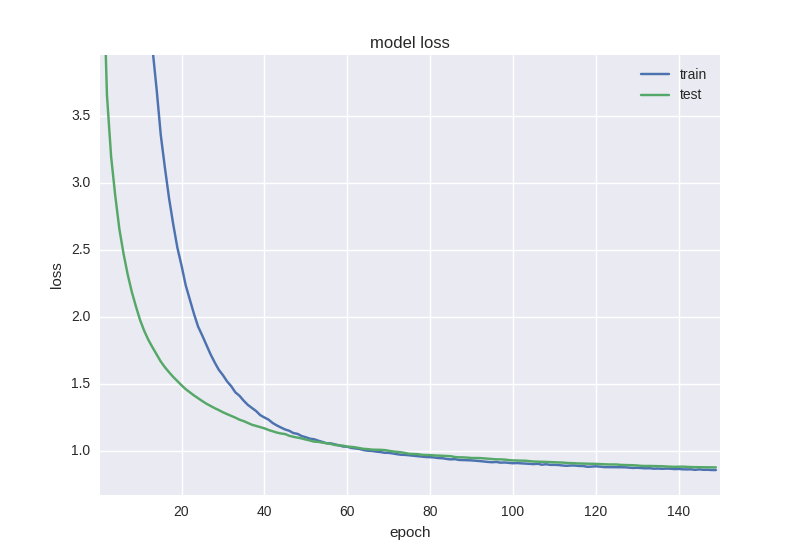
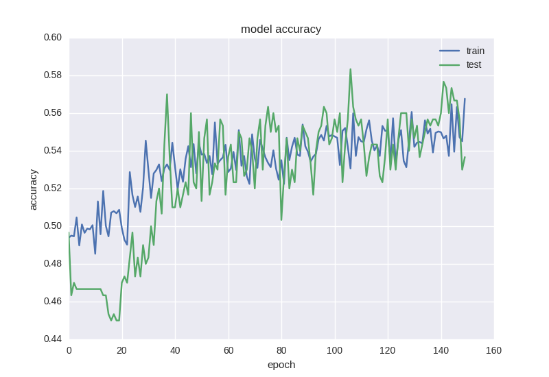
Как видим, графики ошибки и точности адекватны, если остановить обучение сети чуть раньше, можем получить 58% точности предсказания движения цены, что уж точно лучше случайного гадания.
Еще один интересный и интуитивно понятный момент прогнозирования финансовых временных рядов заключается в том, что колебание в следующий день имеет случайную природу, но когда мы смотрим на графики, свечи, мы все-таки можем замечать тренд на следующие 5-10 дней. Давайте проверим, могут ли с такой задачей справиться наша нейронка — спрогнозируем движение цены через 5 дней с последней удачной архитектурой и ради интереса обучим на большем количестве эпох:
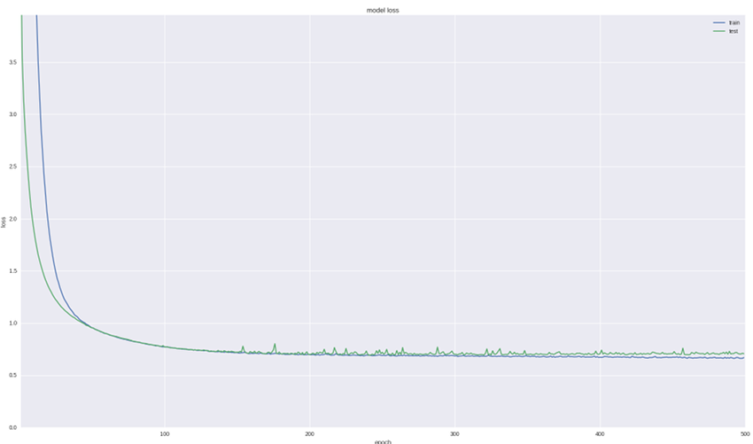
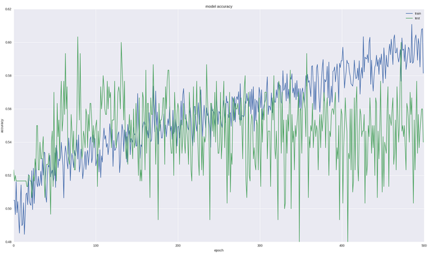
Как видим, если мы остановим обучение достаточно рано (со временем все равно наступает оверфиттинг), то можем получить 60% точности, что очень даже неплохо.
Для задачи регрессии возьмем нашу последнюю успешную архитектуру для классификации (она уже показала, что умеет выучивать нужные признаки), уберем Dropout и обучим на большем количестве итераций.
Также в данном случае мы можем смотреть уже не только на значение ошибки, а и визуально оценить качество прогнозирование с помощью следующего кода:
pred = model.predict(np.array(X_test))
original = Y_test
predicted = pred
plt.plot(original, color='black', label = 'Original data')
plt.plot(predicted, color='blue', label = 'Predicted data')
plt.legend(loc='best')
plt.title('Actual and predicted')
plt.show()
Архитектура сети будет выглядеть следующим образом:
model = Sequential()
model.add(Dense(64, input_dim=30,
activity_regularizer=regularizers.l2(0.01)))
model.add(BatchNormalization())
model.add(LeakyReLU())
model.add(Dense(16,
activity_regularizer=regularizers.l2(0.01)))
model.add(BatchNormalization())
model.add(LeakyReLU())
model.add(Dense(1))
model.add(Activation('linear'))
Посмотрим что получится, если обучить на “сыром” adjustment close:
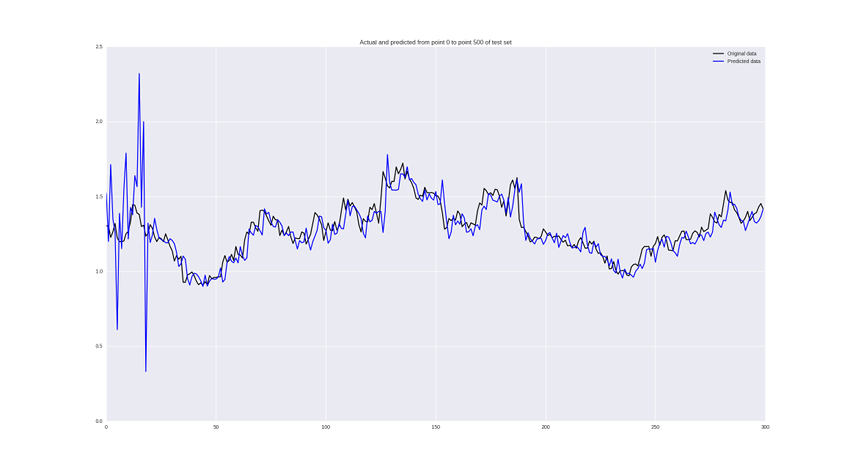
Издалека выглядит неплохо, но если присмотреться, мы увидим, что наша нейронная сеть просто запаздывает со своими предсказаниями, что можно считать провалом.
Если же обучить на изменениях цен, то получим следующие результаты:
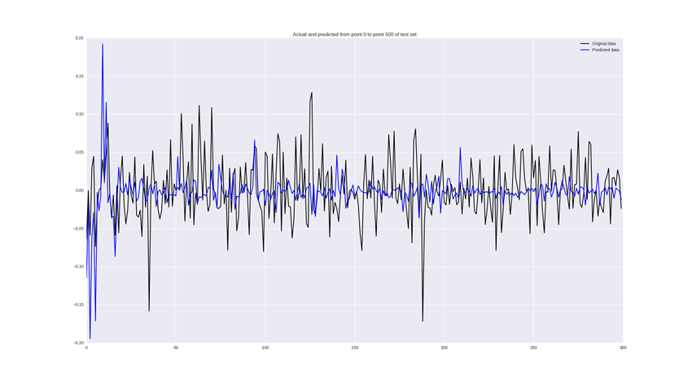
Некоторые значения предсказываются неплохо, кое-где правильно угадывается тренд, но в целом — так себе.
В принципе, на первый взгляд, результаты вообще не впечатляют. Так и есть, но мы обучили самый простой вид нейронной сети на одномерных данных без особой предобработки. Есть ряд шагов, которые позволяют вывести точность на уровень 60-70%:
Занимаясь прогнозированием временных рядов, мы оставили без внимания главную цель — использовать эти данные для торговли и убедиться в том, что она будет прибыльная. Я бы хотел это показать в режиме вебинара онлайн и применить сверточные и рекуррентные сети для задачи прогнозирования плюс проверить прибыльность стратегий, использующих эти предсказания. Если кому-то интересно, жду в Hangouts on Air 5 мая в 18:00 по UTC.
В этой статье мы применили самую простую архитектуру нейронных сетей для прогнозирования движения цен на рынке. Этот пайплайн можно использовать для любых временных рядов, главное — правильно выбрать предобработку данных, определить архитектуру сети, оценить качество работы алгоритма. В нашем случае у нас удалось с точностью 60% предсказывать тренд через 5 дней, используя окно цен в предыдущие 30 дней, что можно считать хорошим результатом. С количественным предсказанием изменения цены получился провал, для этой задачи целесообразно использовать более серьезные инструменты и статистический анализ временного ряда. Весь используемый код в IPython Notebook можно взять по ссылке.